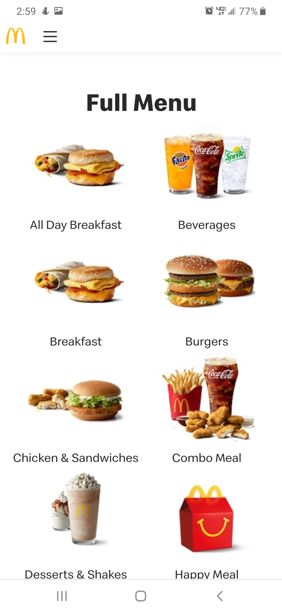

White Space and Clean Design
Adobe
www.adobe.comAdobe is a good example of White Space and clean design. You can see how it uses the White space to help focus your eye on the important stuff. The white space also creates a sense of movement as it guides your eyes down the page.
Visual Hierarchy
Sololearn
www.sololearn.comSololearn is a good example of a visual Hierarchy. You can see how their design makes your eyes go straight to the important stuff first. They made different elements stand out by creating contrast with the colors and font-size.
Hicks Law
McDonalds
www.mcdonalds.com
McDonald's is a good example of Hicks law. Hicks’s Law states that “The time it takes to make a decision increases with the number and complexity of choices.” So when designing a web page you want to keep the number of choices to a minimum. McDonald’s does this by grouping items on its menu.